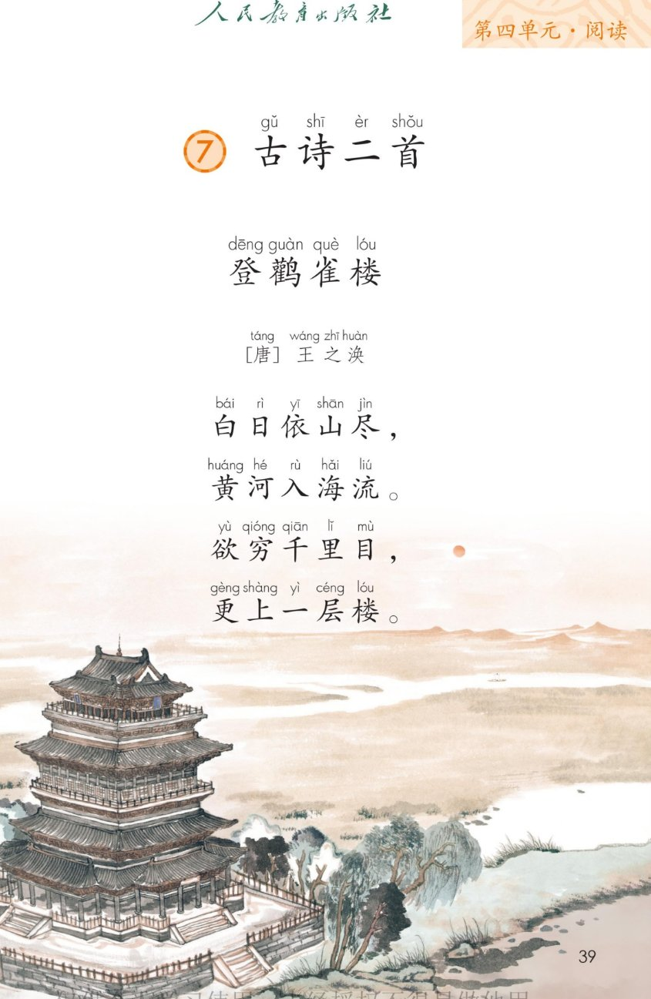
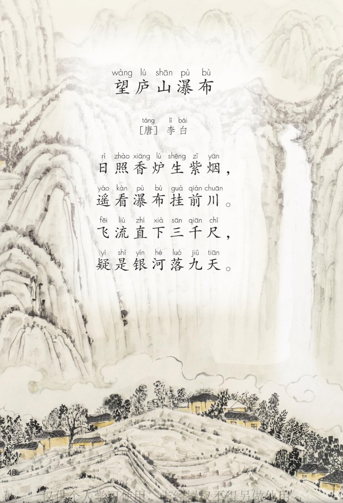
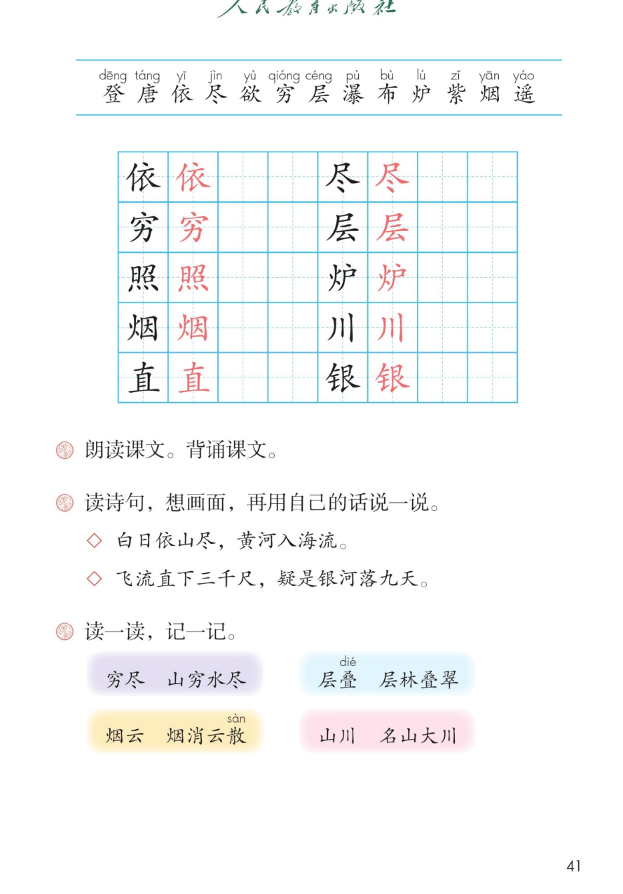

×
🔊 手机听不到声音怎么办？照这 3 步做
① 用
Edge 浏览器打开
www.jeepsh.cn（在微信里打开的点右上角「⋯ → 在浏览器打开」；没装 Edge 就到应用商店搜「Edge」安装）。
② 应用商店搜
「讯飞语记」安装 → 打开它 →
通用设置 → 语音合成设置 → 打开
「合成系统接口」和
「全局生效」两个开关 → 再选一个
中文发音人。
③ 系统语言设为
简体中文，点「
播放」试听能说中文后，
彻底关闭浏览器再重开（后台划掉），回到课件点读就有声音。
→ 打开声音自检
🏯 第 7 课《古诗二首》· 有声图文带读
统编版语文 · 第四单元·阅读 · 课本 P39~41
古诗 2 首 · 共 8 句
会认字 13
会写字 10
听写词 8
近义词 4 组
深入理解 8 题
本课本领 朗读·背诵
🎧 五步学（可随时点任意一句、一个字、一个词单独听）：
① 听读课文——一句一句读，读到哪一句哪一句发光；开「跟读」后读完一句留时间让你自己读。
② 学字词——13 个会认字、10 个会写字（含书写提示），点一个读一个。
③ 词语·听写·造句——先读课后「读一读，记一记」四组词，再听写 8 个词，最后听 4 组近义词。
④ 深入理解——8 道题（认知 / 理解 / 运用 / 拓展），开放题答案不唯一，先想后看。
⑤ 背诵闯关·分角色——按四步背下来，再让两位诗人各读一首。
① 听读课文（点哪一句，读哪一句）点诗前的 ①② 听整首
注音只标本课要认、要写的字，读音来自课本第 41 页生字表
🎤 朗读要求（老师标准）
① 读准字音，特别注意尽、穷、层、瀑；
② 读出古诗的节奏：白日／依山／尽，黄河／入海／流；
③ 读得慢一点，不要像说话那么快；
④ 韵脚读清楚：流、楼；烟、川、天；
⑤ 后两句读出气势——“更上一层楼”要响亮，“飞流直下三千尺”要有力量。
①登鹳雀楼 [唐] 王之涣
白日依山尽，
黄河入海流。
欲穷千里目，
更上一层楼。
②望庐山瀑布 [唐] 李白
日照香炉生紫烟，
遥看瀑布挂前川。
飞流直下三千尺，
疑是银河落九天。
🤔 想一想（点我可跳过）
课本的样子（点一张图，听读这一页）整页点读

第 39 页 · 登鹳雀楼

第 40 页 · 望庐山瀑布

第 41 页 · 生字与课后题
📖 人教版《语文》二年级上册 · 课本第 39~41 页 · 图片仅供个人学习，版权归人民教育出版社所有
② 会认字（13 个）点一个字，听读音、词语和课文里的诗句
② 会写字（10 个）结构、部首、笔画与书写提示为通用规范，供参考，以教材和老师的指导为准
依
yī
依靠 · 依山
8 画 · 左右（亻）
左窄右宽；单人旁的撇要长
尽
jìn
尽头 · 用尽
6 画 · 上下（尸）
上边的尺字写窄
穷
qióng
穷尽 · 无穷
7 画 · 上下（穴）
穴字头写得扁一些
层
céng
一层 · 层叠
7 画 · 半包围（尸）
尸字头写小
照
zhào
日照 · 照亮
13 画 · 上下（灬）
左上的日字写小
炉
lú
香炉 · 火炉
8 画 · 左右（火）
左窄右宽
烟
yān
紫烟 · 烟云
10 画 · 左右（火）
火字旁同样捺变成点
川
chuān
山川 · 前川
3 画 · 独体
第一笔竖撇稍微向左斜
直
zhí
直下 · 一直
8 画 · 独体
上面的十字写小
银
yín
银河 · 银色
11 画 · 左右（钅）
左窄右宽
③ 读一读，记一记（课后题）点一行，听读这一组词语
穷穷尽 山穷水尽
叠层叠 层林叠翠
烟烟云 烟消云散
川山川 名山大川
③ 听写（8 个词）读两遍 → 你在纸上写 → 报答案 → 听示范句
准备听写 · 共 8 个词
○ ○ ○
点下面的「开始听写」，听到一个词就写一个词。
③ 听写的词 · 造句示范点词听读，点句子听示范句，再自己说一句
1穷尽课后词语
示范句：学问是没有穷尽的。
✏️ 我也能说：什么 + 是没有穷尽的
2山穷水尽四字词语
示范句：走到山穷水尽的时候，他也没有放弃。
✏️ 我也能说：遇到 + 山穷水尽 + 也不放弃
3层叠四字词语
示范句：远处的山峦一层层叠在一起。
✏️ 我也能说：什么 + 一层层叠在一起
4层林叠翠四字词语
示范句：秋天的山坡上层林叠翠，美极了。
✏️ 我也能说：哪里 + 层林叠翠
5烟云会写字
示范句：山间飘着淡淡的烟云。
✏️ 我也能说：哪里 + 飘着 + 怎样的烟云
6烟消云散四字词语
示范句：太阳一出来，雾气就烟消云散了。
✏️ 我也能说：什么一出现，什么就烟消云散
7山川会写字
示范句：祖国的山川又美又壮。
✏️ 我也能说：哪里的山川 + 怎么样
8名山大川四字词语
示范句：他走遍了祖国的名山大川。
✏️ 我也能说：谁 + 游览了 + 哪些名山大川
③ 近义词辨析（4 组）相同点 / 不一样在哪 / 各造一句
遥看 — 远望
相同：都是远远地看。
不一样：遥看是诗里的说法，更文雅；远望是平常说话。
遥看：遥看远处的山，像一条绿带子。
远望：远望江面，一只小船慢慢走。
疑是 — 好像
相同：都是心里猜、不十分确定。
不一样：疑是是“怀疑是”，带着惊讶；好像更平常。
疑是：地上白花花的一片，疑是下了一场雪。
好像：天上那朵云，好像是棉花糖。
层叠 — 重叠
相同：都是一层压着一层。
不一样：层叠强调一层层往上排，多写山、林、云；重叠只说压在一起。
层叠：山峦层层叠叠，望不到边。
重叠：桌上的两本书重叠在一起。
烟云 — 云雾
相同：都是飘在空中的水汽。
不一样：烟云像烟一样的云，多用在诗里；云雾是山里的雾，更平常。
烟云：山间烟云缭绕，像仙境一样。
云雾：清晨的云雾把山头藏起来了。
③ 词语拓展（说一说，记一记）
古诗里的数字三千尺 九天 千里 一层
表示“看”的字遥看 望 目 见
诗里的地方鹳雀楼 庐山 香炉峰 黄河
带“山”的词山川 山穷水尽 名山大川 青山
我也会说（像……）疑是银河落九天 — 好像银河从天上落下来
④ 深入理解（8 题 · 先想后看）标「答案不唯一」的题，说得有道理都对
认知《登鹳雀楼》里，诗人站在楼上看到了哪些景物？
看解析
🤔 想一想
解析：
太阳（白日）、山、黄河，还有黄河最终流进的大海。
“白日依山尽”写远处的山和落日，“黄河入海流”写脚下奔流的黄河。
一句往远处看，一句往脚下看，合起来是一大片又高又远的景色。
认知《望庐山瀑布》里，李白把瀑布比成了什么？
看解析
🤔 想一想
解析：
比成“银河”，就是天上的那条星河。
“疑是银河落九天”，意思是：好像是银河从最高的天上落了下来。
这个比喻写出了瀑布又白、又长、又有气势。
理解读“白日依山尽，黄河入海流”，你眼前出现了什么画面？用自己的话说一说。
看解析
🤔 想一想
解析：
远处的太阳一点点沉到山后面，天边的光慢慢暗下来。
脚下的黄河哗哗地往东流，一直流进大海，看不到头。
一动一静：太阳在落，黄河在流，画面又大又远。
🌈 答案不唯一，把“看到什么 + 它怎么动”说清楚就好
理解读“飞流直下三千尺，疑是银河落九天”，你眼前出现了什么画面？
看解析
🤔 想一想
解析：
白亮亮的水从高高的山顶直冲下来，看着又长又急。
水砸在石头上，水花四溅，声音轰隆隆的。
看着看着，好像天上那条银河整个掉了下来。
🌈 答案不唯一，能说出“水什么样、声音怎么样”就更好了
理解“欲穷千里目，更上一层楼”是什么意思？
看解析
🤔 想一想
解析：
字面意思：想要看到千里那么远，就要再往上登一层楼。
里面的道理：站得越高，看得越远。
这句话现在常用来鼓励人：想有更大的收获，就要再努力一步。
运用“三千尺”真的量过吗？诗人为什么这样写？
看解析
🤔 想一想
解析：
三千尺是“很高很高”的意思，不是真的拿尺子量过。
用夸张的数字，让人一下子感到瀑布又高又长、气势大。
古诗里常用这种写法，“千里目”“九天”也是夸张。
🌈 答案不唯一，说出“夸张 + 为了写出什么”就对了
运用如果你站在鹳雀楼上，还想看到更远的景色，你会怎么做？
看解析
🤔 想一想
解析：
我会再往上走一层，站得更高，看得更远。
我会踮起脚、往远处望，把看到的说给同学听。
我明白了：想看得更远，就要先往上走一步。
🌈 答案不唯一，说清“怎么做 + 为什么”就好
拓展两首诗，你更喜欢哪一首？说说你的理由。
看解析
🤔 想一想
解析：
喜欢《登鹳雀楼》：它告诉我“站得越高，看得越远”的道理。
喜欢《望庐山瀑布》：它把瀑布写成银河，特别神奇。
两首我都喜欢：一首讲道理，一首写美景。
🌈 答案不唯一，说清“喜欢哪一首 + 为什么”就是完整的一段话
⑤ 背诵闯关（课后题：朗读课文，背诵课文）点一步，听这一步
💬 背诵支架：先大声读三遍 → 再看着每句的头两个字背 → 接着合上书一句一句往下接 → 最后两首连起来背给同桌听。
⑤ 分角色读（两位诗人各读一首）点一个角色，听他读的那几句
🏯 王之涣（写景）
“白日依山尽，黄河入海流。”
💬 要读得开阔、慢，像站在高楼上往远处看
🏯 王之涣（抒怀）
“欲穷千里目，更上一层楼。”
💬 要读得响亮、往上扬，读出向上走的劲儿
⛰ 李白（远望）
“日照香炉生紫烟，遥看瀑布挂前川。”
💬 “生紫烟”读轻、慢，“挂”要读重
⛰ 李白（惊叹）
“飞流直下三千尺，疑是银河落九天。”
💬 “飞流直下”一气读完，“疑是”读出惊讶
👥 全班齐读
“白日依山尽…… 日照香炉生紫烟……”
💬 两首连起来齐背，整齐、响亮